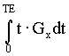
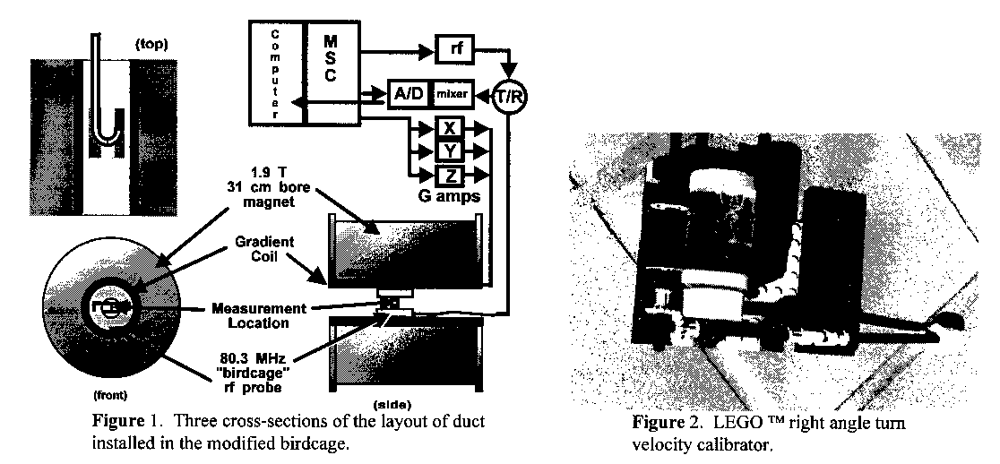

An Unusual Velocity Calibration Device
Dear Dr. Shapiro,
We recently measured the velocity of water flowing in a curved duct of rectangular cross-section, which we installed in special slots cut into an 80.3 MHz birdcage rf probe. Figure 1 shows the geometry. Three orthogonal velocity components were measured in a slice perpendicular to the duct axis at the site where the duct had curved 90". We used a "phase contrast" velocity measurement technique to encode velocity. Phase contrast velocimetry is a difference method that relies an phase shifts induced by motion along a field gradient. The velocity sensitivity of a gradient waveform is proportional to the "first moment" of the gradient waveform (e.g.,

for the x-direction, with TE = echo time) 2D images with and without velocity sensitivity are used to compute velocity. In our view, it is necessary to calibrate imaging sequences used for this type of measurement, and therein lies the utility of the device shown in figure 2, which was assembled From pieces supplied by Greg, Lauren and Peter Icenogle This material is non-magnetic, non-conductive, easily assembled, and inexpensive. The shaft extending to the right was rotated via a remote motor with the device positioned so that a cross-section of the water bottle could be imaged. The motor speed was adjusted to produce 15 rpm rotation of the bottle, and after a few hundred seconds (several times R2/n ) velocity images were acquired. The water rotated as a rigid body: velocity components were vx=1.6·y and vy =-1.6× x cm/s. This provided calibration for the transverse, or secondary, velocity components in the duct cross-section. Because access to the imaging volume is limited it is difficult to produce controlled motions in these directions without a device such as this. The axial, or streamwise, component was calibrated by timed collection with the square duct in situ.
| Figure 1 Three cross-sections of installed in the modified birdcage. | Figure 2. LEGO ™ right angle turn velocity calibrator. |
Sincerely,
Steve Altobelli Eiichi Fukushima